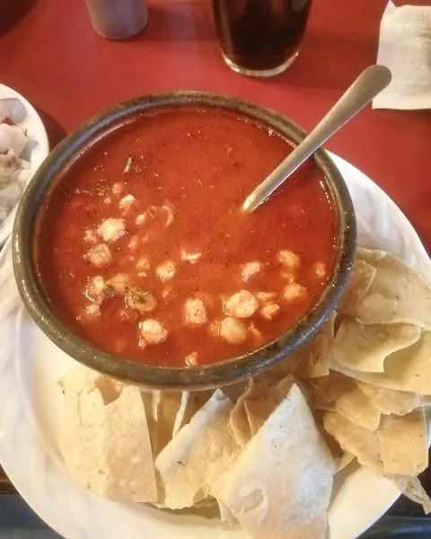
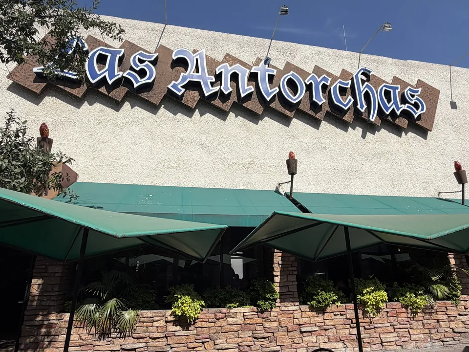
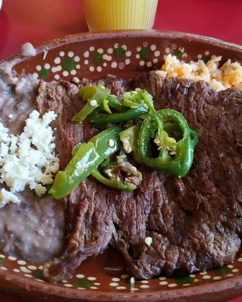
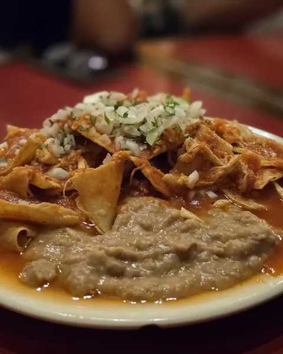
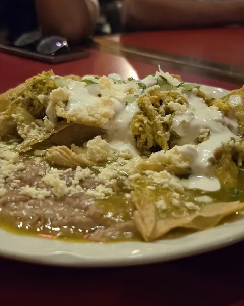
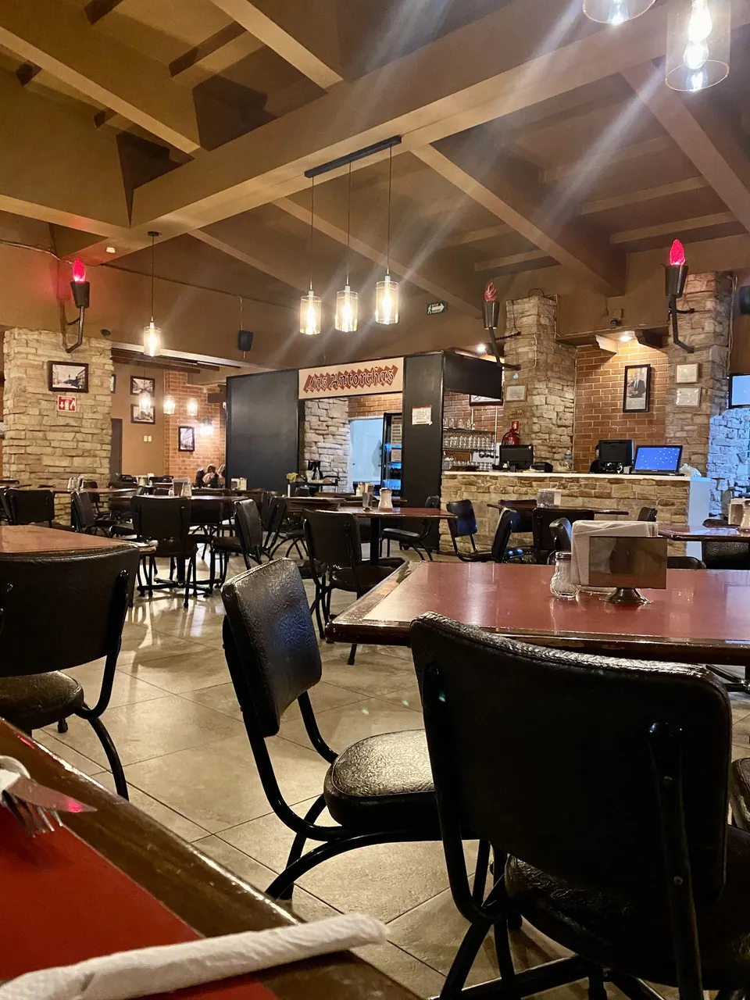
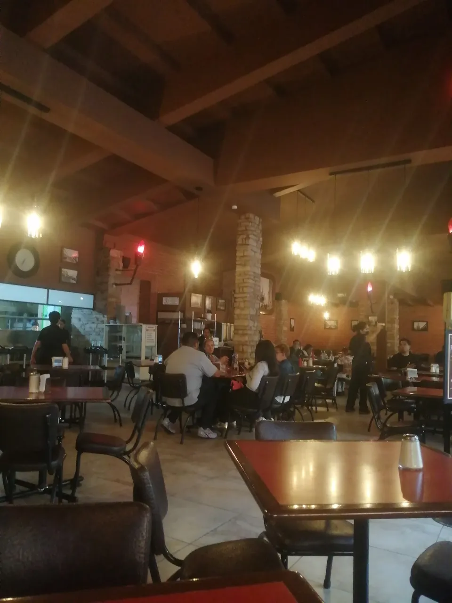
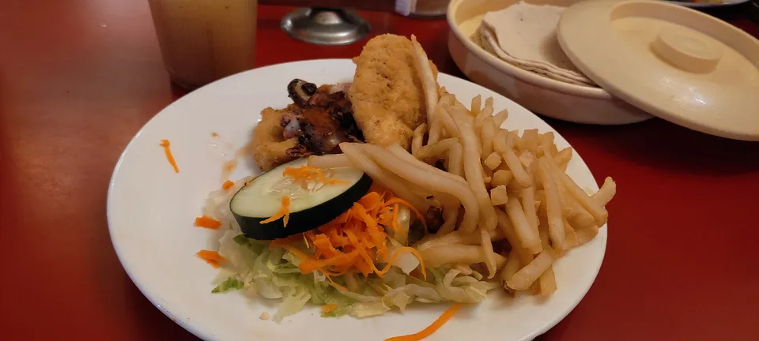
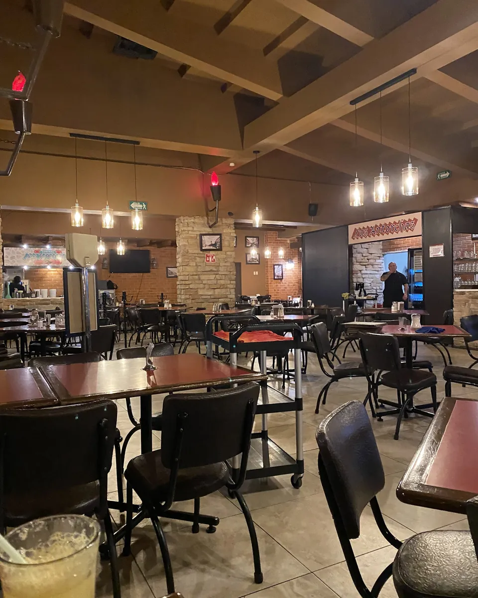
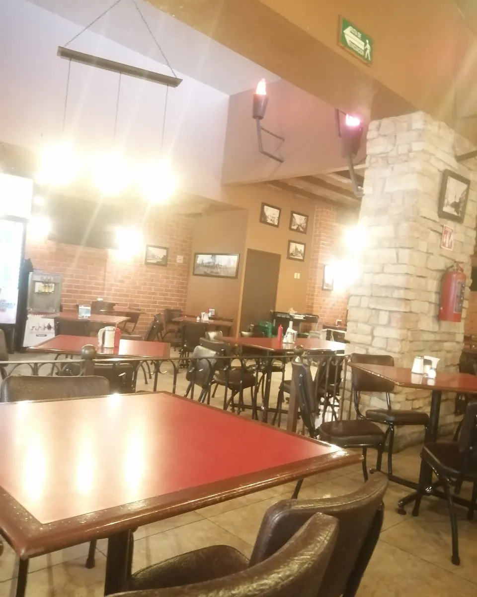

Pozole con tostadas
Pregunta el precio

El menú de la casa
Toca la antorcha del antojo. Al final, tu mesa llega armada por WhatsApp.

Pregunta el precio

Pregunta el precio

Pregunta el precio

Pregunta el precio
De la carta
450 ml
Enchiladas, 4 piezas, con guacamole
4 piezas, con guacamole
Rellenas de queso, salsa verde y frijoles
Rellenas de pollo, salsa verde y frijoles
Confirma precios y disponibilidad al pedir.

Lo que dejan en la mesa
15,376 opiniones en Google
Comanda 01Mesa de regreso
“Hace más de cinco años pasaron, para que regresara a comer aquí. Buen servicio. Mucha amabilidad de parte de la mesera y buena atención. Muy recomendable.”
Mercedes Garcíaen Google
Comanda 02Mesa de Aguascalientes
“Muy rico todo, limpio, sabroso... pidan la pelea de gallos y enchiladas suizas.”
toñoñen TripAdvisor
Comanda 03Mesa de amigos
“Poco tiempo de espera, buenos precios y servicio muy amable, la comida muuuuyyy sabrosa, sazón casero.”
Arturo Cen TripAdvisor
Comanda 04Mesa de siempre
“Mi familia y yo hemos ido allí durante años y continuaremos haciéndolo.”
Samy Wen TripAdvisor
Comanda 05Mesa para uno
“Pedí las Enchiladas Suizas, estaban muy buenas, me encantaron. El lugar está muy cómodo para visitar.”
Daniela Aen TripAdvisor
Comanda 06Mesa en familia
“Excelente servicio, Jorge muy amable, servicial, con muy buenas recomendaciones. La comida muy rica, recomendado al 100%.”
Aidee Aen TripAdvisor
Comanda 07Mesa de amigos
“Comida maravillosa, servicio amable, todo muy fresco. ¡Gracias, Jorge!”
Maria Pen TripAdvisor
Comanda 08Mesa de café
“Todo excelente.”
Dulceen Google
Lo que más piden
“Pidan la pelea
de gallos.”
toñoñ, de Aguascalientes, en TripAdvisor
La que recomiendan pedir
Las que más nombran
Con chicharrón
Con rajas de chile poblano
Para el desayuno
La de la casa
Pásale




Visítanos
Av. Francisco I. Madero 240, Zona Centro, 20000 Aguascalientes, Ags.
Lunes a sábado de 8 a.m. a 12 a.m.
Preguntas de la mesa
Sí. Abrimos a las 8 a.m. de lunes a sábado y a las 9 los domingos. Los huevos divorciados Antorcha son los de la casa.
Entre $100 y $200 por persona. Las enchiladas van de $110 a $130 y las bebidas de la casa de $90 a $100.
Mándanos WhatsApp con cuántos son o llámanos al 449 918 9633 y te la dejamos puesta.
Hasta las 12 de la noche de lunes a sábado. Domingo cerramos a las 11 p.m.
Para tu muestra
Pásanoslo por el mismo chat donde te llegó esta muestra.